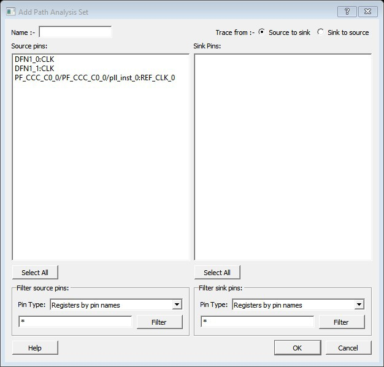
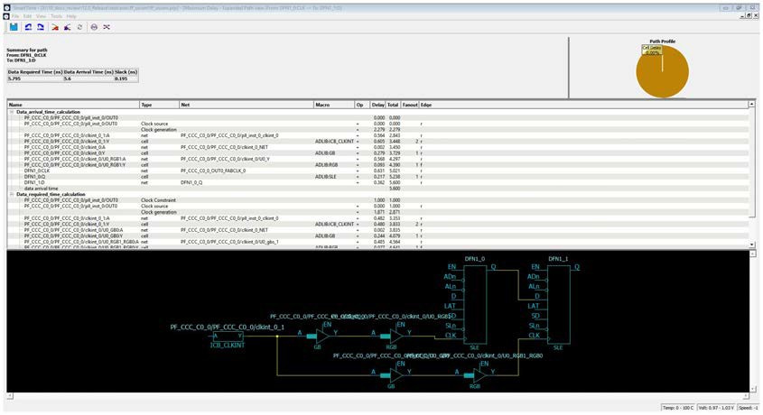
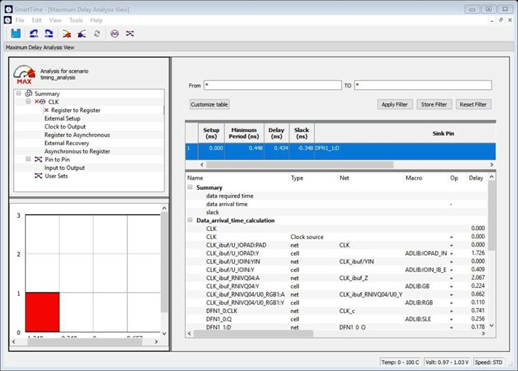

11.6 SmartTime Timing Analyzer
(Ask a Question)The following sections describe the SmartTime Timing Analyzer functions.
11.6.1 SmartTime Analyzer Components
(Ask a Question)SmartTime Timing Analyzer consists of the following components:
- Domain Browser: allows you to perform your timing analysis on a per domain basis.
- Path List: shows paths in a specific set within a given domain sorted by slack.
- Path Details: shows detailed timing analysis of a selected path in the paths list.
- Analysis View Filter: allows you to filter the content of the paths list.
- Path Slack Histogram: when a set is selected in the Domain Browser, Path Slack Histogram shows a distribution of the path slacks for that set. Selecting one or multiple bars in the Path Slack Histogram filters the paths shown in the Path List.
The following figure shows the SmartTime Timing Analyzer Components. You can copy and change the resolution and number of bars of the chart from the right-click menu.
11.6.2 Analyzing Your Design
(Ask a Question)The timing engine uses the following priorities when analyzing paths and calculating slack:
- False path
- Max/Min delay
- Multi-cycle path
- Clock
If multiple constraints of the same priority apply to a path, the timing engine uses the tightest constraint.
You can perform two types of timing analysis:
- Maximum Delay Analysis
- Minimum Delay Analysis
- From the SmartTime Tools menu, choose Timing Maximum Delay Analysis or Minimum Delay Analysis.
- From the SmartTime window, click the icon for Maximum Delay Analysis or the icon for Minimum Delay Analysis.
11.6.3 Maximum Delay Analysis View
(Ask a Question)- In the Domain Browser, select the clock domain. Clock domains with a indicate that the timing requirements in these domains were met. Clock domains with an x indicate that there are violations within these domains. Paths List shows the timing paths sorted by slack. The path with the lowest slack (biggest violation) is at the top of the list.
-
Select the path you want to view.
Path Details below the Paths List shows detailed information about how the slack was computed by detailing the arrival time and required time calculation. If a path is violated, the slack is negative and shown in red.
- To display a separate view that includes the path details and schematic, double-click the path.
-
Repeat this procedure as necessary.
Note: If the minimum pulse width of one element on the critical path limits the maximum frequency for the clock, an icon for the clock name appears in the Summary List. Clicking the icon displays the name of the pin that limits the clock frequency.
11.6.4 Managing Clock Domains
(Ask a Question)In SmartTime, timing paths are organized by clock domains.
- Register to Register
- External Setup (in the Maximum Analysis View) or External Hold (in the Minimum Analysis View)
- Clock to Out
You must select a path set to display a list of paths in that specific set.
To manage the clock domains:
-
Right-click anywhere in the Domain Browser and choose Manage Clock
Domains.
The Manage Clock Domains dialog box appears.Tip: You can click the icon in the SmartTime window bar to display the Manage Clock Domains dialog box.
-
To add a new domain, select a clock domain from the Available clock
domains list and click Add. To add a
non-explicit clock domain, click New Clock.
The Choose the Clock Source Pin dialog box appears, and you can select the clock source pin. You can choose to filter the available pins and search.
Figure 11-6. Choose the Clock Source Pin Dialog Box - To remove a displayed domain, select a clock domain from the Show the clock domains in this order list and click Remove.
- To change the display order in the Domain Browser, select a clock domain from the Show the clock domains in this order list, and then use Move Up or Move Down to change the order in the list.
-
Click OK.
SmartTime updates the Domain Browser based on your specifications. If you added a new clock domain, it includes at least three path sets, as mentioned above.
11.6.5 Managing Path Sets
(Ask a Question)You can create and manage custom path sets for timing analysis and tracking purposes.
To manage path sets:
-
Right-click anywhere in the Domain Browser and choose Add
Set.
The Add Path Analysis Set dialog box appears.Tip: You can click the icon in the SmartTime window bar to display the Add Path Analysis Set dialog box.
Figure 11-7. Add Path Analysis Set Dialog Box  - Enter a name for the path set.
- Select the source and sink pins. You can use the 11.6.8Â Using Filters to control the type of pins displayed.
-
Click OK.
The new path set appears below User Sets in the Domain Browser.
Figure 11-8. Updated Domain Browser with User Sets 
-
To rename a path:
- Select the path set from User Sets in the Domain Browser.
- Right-click the set you want to rename, and then choose Rename Set from the right click menu.
- Edit the name directly in the Domain Browser.
-
To remove a path:
- Select the path set from User Sets in the Domain Browser.
- Right-click the set you want to delete, and then choose Delete Set from the right click menu.
11.6.6 Displaying Path List Timing Information
(Ask a Question)Path List in the Timing Analysis View shows the timing information required to verify the timing requirements and identify violating paths. The Path List is organized in a grid where each row represents a timing path with the corresponding timing information displayed in columns. Timing information is customizable, allowing you to add or remove columns for each type of set.
By default, each type of set displays the following subset of columns:
- Register to Register: Source Pin, Sink Pin, Delay, Slack, Arrival, Required, Setup, Minimum Period, and Skew.
- External Setup: Source Pin, Sink Pin, Delay, Slack, Arrival, Required, Setup, and External Setup.
- Clock to Out: Source Pin, Sink Pin, Delay, Slack, Arrival, Required, and Clock to Out.
- Input to Output: Source Pin, Sink Pin, Delay, and Slack.
- Custom Path Sets: Source Pin, Sink Pin, Delay, and Slack. You can add the
following columns for each type of set:
- Register to Register: Clock, Source Clock Edge, Destination Clock Edge, Logic Stage Count, Max Fanout, Clock Constraint, Maximum Delay Constraint, and Multicycle Constraint.
- External Setup: Clock, Destination Clock Edge, Logic Stage Count, Max Fanout, Clock Constraint, Input Delay Constraint, Required External Setup, Maximum Delay Constraint, and Multicycle Constraint.
- Clock to Out: Clock, Source Clock Edge, Logic Stage Count, Max Fanout, Clock Constraint, Output Delay Constraint, Required Maximum Clock to Out, Maximum Delay Constraint, and Multicycle Constraint.
- Input to Output: Arrival, Required, Setup, Hold, Logic Stage Count, and Max Fanout.
- Custom Path Sets
To customize the set of timing information in the Path List:
-
Choose Customize table on the top-left corner of path
list to open the Customize Paths List Table dialog box.
Figure 11-9. Customize Paths List Table Dialog Box - To add one or more columns, select the fields to add from the Available fields list and click Add.
- To remove one or more columns, select the fields to remove from the Show these fields in this order list, and click Remove.
- To change the order in which the fields appear, select fields in the Show these fields in this order list and click Move Up or Move Down.
-
Click OK to add or remove the selected columns.
SmartTime updates the Timing Analysis View.
11.6.7 Displaying Expanded Path Timing Information
(Ask a Question)SmartTime displays the list of paths and path details for all parallel paths.
To display the Expanded Path View:
- From the Path List, double-click the path, or right-click a path and select expand selected paths.
-
From the Expanded Path View, double-click the path, or right-click the path and
select expand path.
Figure 11-11. Expanded Path View The Expanded Path Summary provides a summary of all parallel paths for the selected path. The Path Profile chart shows the percentage of time taken by cells and nets for the selected path. If no parallel path is selected in this view, the Path Profile shows the percentage for all paths. By default, SmartTime shows only one path for each Expanded Path. To change this default, use the SmartTime Options dialog box.
The Expanded Path View includes a schematic of the path and a path profile chart for the paths selected in the Expanded Path Summary.
11.6.8 Using Filters
(Ask a Question)You can use filters in SmartTime to limit the Path List content (that is, create a filtered list on the source and sink pin names).
Filtering options appear at the top of the Timing Analysis View. You can save these filters one level below the set under which they have been created.
To use the filter:
- Select a set in the Domain Browser to display a given number of paths, depending on your SmartTime Options settings (100 paths by default).
-
Enter the filter criteria in both the From and To fields, and then click
Apply Filter.
The display limits the paths to those that match your filter criteria.
Figure 11-12. Maximum Delay Analysis View  -
Click Store Filter to save your filter criteria with a
special name.
The Create Filter Set dialog box appears.
Figure 11-13. Create Filter Set Dialog Box 
-
Enter a name for the filter, such as myfilter01, and click
OK.
Your new filter name appears below the set under which it was created.
Figure 11-14. Specifying the Filter my_filter01 - Repeat this procedure to cascade as many sets as you need using the filtering mechanism.
-
To edit a filter in the set:
- Select the filter you want to edit.
- Right-click the filter and choose Edit Set from the shortcut menu.
-
To rename a set created with filters:
- Select the set that uses filters.
- Right-click the set, and choose Rename Set from the shortcut menu.
- Edit the name directly in the Domain Browser.